| 名 前 | 画 像 | HP | 攻 撃力 | 耐 性 | 弱 点 | メ モ | 持 ち物 | 出 現場所 | 詳 細情報 | 通 し番号 |
| おちゃめいど | 1200 | 120 | 光 | 闇 | プシュケの趣味シリーズその3。 1体の製作費は約150万ペンネ。 |
レモン プロマイド5 1000PN 2000PN |
プシュケのダンジョン奥 クロップ洞窟Lv20 |
魔法6発(放射状、混乱) 魔法3発(狙、混乱) 突進 体当たり4キャラ分 接触(混乱) |
031 | |
| あーすうるふ | 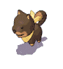 | 560 | 66 | 地 | 風 | 地悪魔との契約により力を得た狼。 黄色のスカーフはその証である。 |
バナナ するめ 50PN 100PN |
クロップ洞窟Lv9、Lv10、Lv20 | 突進 体当たり3キャラ分 |
032 |
| ぞんび | 800 | 72 | 地 | 火風 | 魔の力によって操られた魔族の屍。 乾いているため可燃性が高い。 |
肉団子 アユ 100PN 110PN 120PN |
クロップ洞窟Lv9、Lv20 | 体当たり2キャラ分 魔法2発(狙、連射、毒) 接触(毒) 目が合うと逃げる |
033 | |
| くのうぃっち | 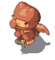 | 1600 | 72 | 地 | 風 | 魔法と武術の両方に秀でた中級魔族。 武器に塗られた毒は敵の精神を混乱させる。 |
肉団子 アユ 60PN 100PN |
クロップ洞窟Lv9、Lv10、Lv20 | 雷(狙、麻痺) 魔法1発(狙、混乱) 魔法2発(混乱) 魔法6発(乱射、混乱) |
034 |
| ぼすさるーん | 800 | 72 | 水風爆 | 火 | サル達のリーダーで巨大ながらも機敏。 ダイナマイトを用いて、敵を攻撃する。 |
バナナ するめ 50PN 100PN |
カヤパの森Lv10、Lv20 | ダイナマイト 体当たり2キャラ分 |
035 | |
| めでぃうさ | 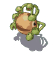 | 640 | 72 | 地風 | 蛇の頭を持つ中級魔族。 目から怪光線を放ち、それに触れた者を石にしてしまう。 |
アユ たまご 210PN 250PN 300PN |
カヤパの森Lv10、Lv20 | レーザー(狙、石化) 魔法1発(狙、石化) 突進 接触(石化) |
036 | |
| めいす | 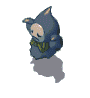 | 640 | 72 | 地 | 風 | モンスターの無念が実体化したもの。 思考力は無く、攻撃パターンは単純。 |
アユ たまご 50PN 100PN |
クロップ洞窟Lv10、Lv20 | 体当たり3キャラ分 魔法1発(狙) 目が合うと逃げる |
037 |
| すけるとん | 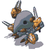 | 1600 | 72 | 地 | 風 | 邪悪な力によって操られる魔族の骨。 機敏な動きと厳しい剣撃で敵を追い詰める。 |
するめ 柿 70PN 100PN 110PN |
クロップ洞窟Lv10、Lv20 | 突進 広範囲攻撃 魔法2発(狙、連射) 魔法1発(狙) ジャンプ ノースタン |
038 |
| えんぺらー | 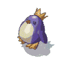 | 800 | 90 | 水凍 | 火 | 魔力に秀でたペンギンの総称。 冷気を自在に操り、標的を氷漬けにする。 |
たまご サバの味噌煮 3PN 6PN 10PN |
パーヴェル庭園Lv11、Lv20 | 氷の弾(狙、貫通、凍結) 氷の障壁(凍結) 接触(凍結) |
039 |
| くらげさん | 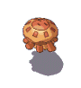 | 1000 | 90 | 火 | 闇 | 放電現象を起こす、微小生物達の集合体。 深い傷を負わせると、突進して自爆してくる。 |
するめ 柿 60PN 70PN 100PN |
パーヴェル庭園Lv5、Lv11、Lv20 | 引き寄せ 魔法4発 魔法1発(狙) 自爆 |
040 |
| ぶるーじぇる | 960 | 109 | 水 | 火 | パーヴェル庭園の水がモンスター化したもの。 水という特徴を生かした攻撃が得意。 |
たまご サバの味噌煮 5PN 10PN 20PN |
パーヴェル庭園Lv12、Lv20 | 体当たり2キャラ分 魔法1発(狙) バリアー 突進 |
041 | |
| うぉーどら | 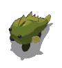 | 1000 | 109 | 水 | 火 | 水辺を好む竜の変種で肌はいつも湿っている。 氷結ブレスを吐き、敵を凍らせる。 |
柿 チャーハン 60PN 70PN 100PN |
パーヴェル庭園Lv12、Lv20 | ブレス(狙、凍結) | 042 |
| ぐりふぉん | 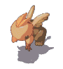 | 960 | 109 | 水光 | 地 | 鳥と獣の混ざった様な姿を取るモンスター。 ジャンプで敵をかく乱し、魔法の光輪で切り裂く。 |
サバの味噌煮 ソーセージ 500PN 1000PN |
ケノーピ火山Lv12、Lv20 | ビーバー2発(狙、貫通) 魔法2発 ジャンプ 突進 体当たり3キャラ分 |
043 |
| ちょっきんぐ | 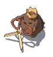 | 1200 | 109 | 地火 | 水 | まさみん一族の強人。 キングの名に相応しい力を持つが、前の方向が認識できないのは同じ。 |
柿 チャーハン 100PN 500PN |
ケノーピ火山Lv12、Lv20 | ハサミ攻撃(6ヒットくらい) 突進 目が合うと行動しない |
044 |
| ぐれむりん | 960 | 109 | 光 | 火 | 帽子が特徴の中級間族。 矛で相手を牽制しながら魔法を放つ。 |
柿 チャーハン 1000PN 2000PN |
ケノーピ火山Lv8、Lv12、Lv20 | 魔法3発(狙) 魔法2発 追跡弾1発 ワープ 姿を消す 魔法1発(狙) |
045 | |
| ですさるーん | 1400 | 126 | 爆 | 光 | 『いえてぃ』とも呼ばれる巨大な白猿。 凍結させた敵を爆破するという戦術を用いる。 |
サバの味噌煮 ソーセージ 65PN 70PN 100PN |
パーヴェル庭園Lv15、Lv20 | 魔法3(狙、凍結) ダイナマイト 体当たり2キャラ分 接触(凍結) |
046 | |
| とげないと | 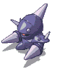 | 1200 | 126 | 水 | 火 | 鎧を着込んだ中級魔族。 矛先に毒を仕込んだ伸縮自在の槍を使いこなす。 |
チャーハン ドーナツ 100PN 1000PN |
パーヴェル庭園Lv12、Lv15、Lv20 | 縄標1発(狙、毒) 縄標3発(狙、毒) 突進 |
047 |
| けるびー | 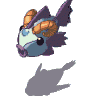 | 1800 | 144 | 水 | 火 | 2本の角を生やした悪魔の魚。 角から発するレーザーで敵を凍らせる。 |
チャーハン ドーナツ 1000PN 2000PN |
トリポカ湖Lv14 パーヴェル庭園Lv20 |
突進 魔法3発(狙、凍結) 魔法4発(放射状、2連続、凍結) ビーム(狙、凍結) 接触(凍結) |
048 |
| がませんにん | 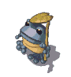 | 1600 | 144 | 火 | 闇 | 地獄に流れる川の水を飲み、モンスターと化したカエル。 水を自在に操る。 |
ソーセージ リンゴ 1000PN 2000PN |
トリポカ湖Lv14 パーヴェル庭園Lv20 |
体当たり2キャラ分 雨降らし3発(連続、狙) 氷の弾(狙、凍結) 接触(毒) |
049 |
| ごーれむ | 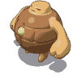 | 2200 | 144 | 地 | 風 | 魔族の魔術師によって作られた動く石像。 その重量を生かして大地を振動させる。 |
ドーナツ ひれステーキ 100PN 110PN 120PN |
クロップ洞窟Lv15、Lv20 | 体当たり3キャラ分 地震 |
050 |
| ごーすと | 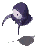 | 1800 | 168 | 水闇 | 光 | 邪なる悪霊で生者を憎んでいる。 姿を自在に透明化する事が出来る。 |
ソーセージ リンゴ 250PN 300PN 500PN |
クロップ洞窟Lv15、Lv20 | ワープ 広範囲攻撃(貫通、呪) 魔法4発 姿を消す |
051 |
| くいーんびー | 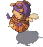 | 2600 | 168 | 風 | 火 | びー一族の女王様。その能力はびーより1回り高い。 毒針を飛ばしてくる。 |
リンゴ サンドイッチ 100PN 110PN 120PN |
クロップ洞窟Lv10、Lv15、Lv20 | 突進 針1発(狙、毒) 針3連発(狙、毒) 針3発(狙、毒) 接触(毒) |
052 |
| べひもす | 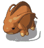 | 2800 | 168 | 地風 | 水 | 地震を自由自在に引き起こす大地の魔獣。 結界のお陰で正面からの攻撃に対し非常に強い。 |
リンゴ サンドイッチ 1000PN 1500PN 2000PN |
クロップ洞窟Lv16、Lv20 | 突進 地震 魔法1発(狙) ブレス(狙、石化) 前方物理攻撃ダメージ激減 |
053 |
| こぐも | 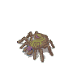 | 1200 | 120 | 風 | 水 | おにぐもの子供。 この形態で50の季節を越すと、晴れておにぐもになれる。 |
ドーナツ ひれステーキ 100PN |
クロップ洞窟Lv16、Lv28、Lv20 | ジャンプ 突進 |
054 |
| てんし | 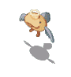 | 2000 | 246 | 光 | 闇 | 神聖な生物で、ゆえにその名で呼ばれている。 天の回廊の警備が主な役割である。 |
リンゴ サンドイッチ 300PN 500PN 600PN |
アプリエス神殿Lv16、Lv18 パーヴェル庭園Lv20 |
魔法1発(狙) 魔法3発(狙) HP1000回復 HPが減ると逃げる |
055 |
| はーぴー | 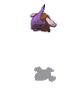 | 2400 | 246 | 地光 | 水 | 光の力を内に秘めた魔鳥。 小さな姿に似合わない強力なブレスを吐く。 |
サンドイッチ レモン 250PN 300PN 500PN |
アプリエス神殿Lv16 カヤパの森Lv20 |
突進 ブレス(狙) |
056 |
| げんぶ | 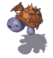 | 3200 | 246 | 水光 | 火 | 元は神殿を守護する聖獣だったが、今はモンスター化している。 拡散型の光球を使う。 |
ひれステーキ どら焼き 250PN 300PN 500PN |
アプリエス神殿Lv16 クロップ洞窟Lv16、Lv20 |
魔法3発(狙) 魔法4発(狙) 突進 ノースタン |
057 |
| きゅうび | 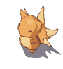 | 2800 | 360 | 光 | 地 | 元は9本の尾を持つ神聖なるキツネ。 しかし魔の力を得た際に4本を失ってしまう。 |
ひれステーキ どら焼き 250PN 300PN 500PN |
アプリエス神殿Lv17 カヤパの森Lv20 |
体当たり2キャラ分 魔法1発(狙) 魔法3発(狙) 分身 |
058 |
| だいてんし | 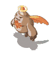 | 2600 | 360 | 光 | 魔法大戦時に魔王群の大部分を構成していた中級魔族。 強力な光の力を操る。 |
サンドイッチ レモン 500PN 1000PN |
アプリエス神殿Lv17、Lv18 パーヴェル庭園Lv20 |
魔法2発 魔法3発(狙) 広範囲魔法(混乱) HP1000回復 |
059 | |
| かえるもんく | 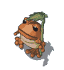 | 3200 | 360 | 光 | 闇 | 光の回廊の守護兵だが、力に溺れ、そして闇に魅入られてしまう。 | どら焼き ハンバーガー 500PN 1000PN 2000PN |
アプリエス神殿Lv17 パーヴェル庭園Lv20 |
突進 体当たり2キャラ分 雨降らし3発(連続、狙) 氷の弾(貫通、氷結、狙) |
060 |
| 名 前 | 画 像 | HP | 攻 撃力 | 耐 性 | 弱 点 | メ モ | 持 ち物 | 出 現場所 | 詳 細情報 | 通 し番号 |